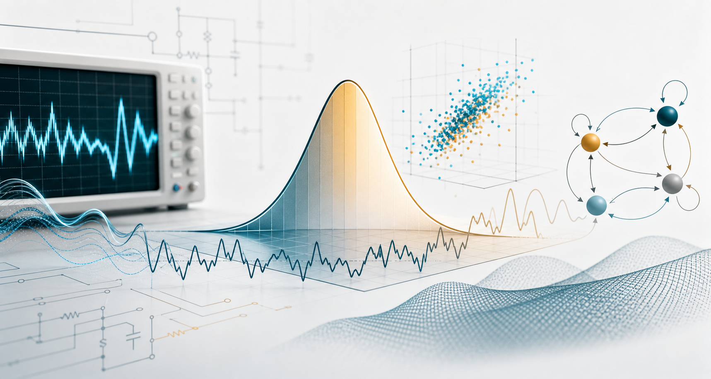

Probability Foundations
從工程案例、樣本空間、事件、條件機率與 Bayes rule 開始，建立描述不確定性的共同語言。

Textbook
本課程依據 Probability, Statistics, and Random Processes for Electrical Engineering, 3/e 的內容結構設計，重點放在工程問題中的不確定性建模、資料判讀、隨機訊號分析與系統效能評估。
Third Edition
課程主題將以章節概念串接，讓學生把公式、模型與工程應用放在同一張學習地圖中理解。
Learning Map
從工程案例、樣本空間、事件、條件機率與 Bayes rule 開始，建立描述不確定性的共同語言。
依序學習離散、單一連續、成對、向量與隨機變數總和，掌握分布、期望、轉換與長期平均。
把樣本資料轉化為推論，練習參數估計、信賴區間、假設檢定與工程資料的統計判讀。
延伸到隨機程序、隨機訊號處理、馬可夫鏈與等候理論，分析時間變化、狀態轉移與系統效能。
Chapters
課程內容改以教材章節為主軸，方便依概念深度逐步建立完整的機率與隨機系統觀點。
以通訊、可靠度、網路與量測問題作為起點，理解機率模型在工程中的角色。
建立事件、集合、條件機率、獨立性與全機率定理等核心基礎。
討論 PMF、CDF、期望值與常見離散分布，連結計數型工程資料。
分析單一隨機變數的 CDF、PDF、期望值、轉換、常見連續分布、可靠度、亂數產生與 entropy。
進入第 4 章學習 joint distribution、marginal distribution、conditional distribution 與相關性。
將多個隨機量組成向量，處理矩陣式表示、多維分布與線性轉換。
從隨機變數和、平均值、law of large numbers 到 central limit theorem。
以資料樣本進行參數估計、信賴區間與假設檢定，支援工程決策。
介紹隨時間變化的隨機模型，包含均值、自相關、平穩性與功率概念。
處理隨機訊號通過系統後的特性，連結頻域分析與濾波觀念。
研究狀態轉移、轉移矩陣、穩態分布與長期行為的工程應用。
建立到達、服務、等待時間與系統容量的模型，分析等候系統效能。
Assessment
評量將以章節概念理解、計算推導、工程應用與資料解釋能力為核心，鼓勵學生把機率工具用在具體系統問題上。